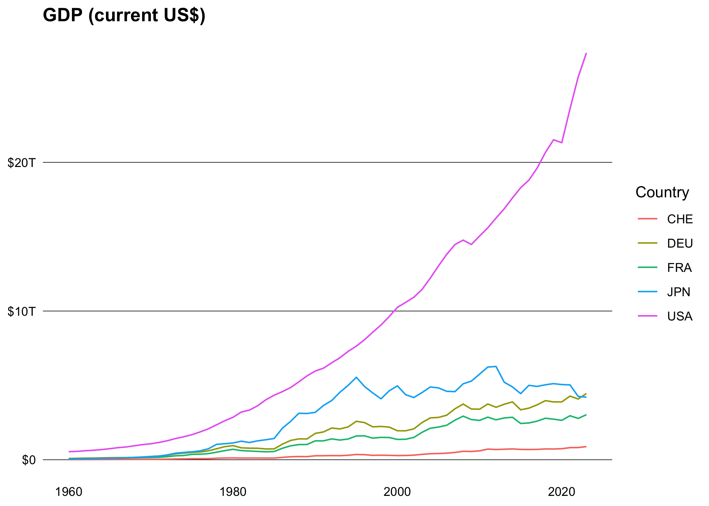

Overview
worlbank provides a simple interface to the following World Bank APIs:
The main difference to other packages is that it’s a modern implementation using the httr2 package and supports all available endpoints and parameters.
Installation
You can install the released version of worldbank from CRAN with:
install.packages("worldbank")And the development version from GitHub with:
# install.packages("pak")
pak::pak("m-muecke/worldbank")Usage
worldbank functions are prefixed with wb_ and follow the naming convention of the World Bank API v2.
library(worldbank)
# filter by specific country
wb_country(c("US", "DE"))
#> country_id country_code country_name region_id region_code
#> 1 DEU DE Germany ECS Z7
#> 2 USA US United States NAC XU
#> region_value admin_region_id admin_region_code admin_region_value
#> 1 Europe & Central Asia <NA> <NA> <NA>
#> 2 North America <NA> <NA> <NA>
#> income_level_id income_level_code income_level_value lending_type_id
#> 1 HIC XD High income LNX
#> 2 HIC XD High income LNX
#> lending_type_code lending_type_value capital_city longitude latitude
#> 1 XX Not classified Berlin 13.4115 52.5235
#> 2 XX Not classified Washington D.C. -77.0320 38.8895
# or fetch all (default)
country <- wb_country()
str(country)
#> 'data.frame': 296 obs. of 18 variables:
#> $ country_id : chr "ABW" "AFE" "AFG" "AFR" ...
#> $ country_code : chr "AW" "ZH" "AF" "A9" ...
#> $ country_name : chr "Aruba" "Africa Eastern and Southern" "Afghanista"..
#> $ region_id : chr "LCN" "NA" "MEA" "NA" ...
#> $ region_code : chr "ZJ" "NA" "ZQ" "NA" ...
#> $ region_value : chr "Latin America & Caribbean" "Aggregates" "Middle "..
#> $ admin_region_id : chr NA NA "MNA" NA ...
#> $ admin_region_code : chr NA NA "XQ" NA ...
#> $ admin_region_value: chr NA NA "Middle East, North Africa, Afghanistan & P"..
#> $ income_level_id : chr "HIC" "NA" "LIC" "NA" ...
#> $ income_level_code : chr "XD" "NA" "XM" "NA" ...
#> $ income_level_value: chr "High income" "Aggregates" "Low income" "Aggregat"..
#> $ lending_type_id : chr "LNX" NA "IDX" NA ...
#> $ lending_type_code : chr "XX" NA "XI" NA ...
#> $ lending_type_value: chr "Not classified" "Aggregates" "IDA" "Aggregates" ...
#> $ capital_city : chr "Oranjestad" NA "Kabul" NA ...
#> $ longitude : num -70 NA 69.2 NA NA ...
#> $ latitude : num 12.5 NA 34.5 NA NA ...
# search for specific indicator
ind <- wb_indicator()
ind <- subset(
ind,
grepl("GDP", id, fixed = TRUE) & source_value == "World Development Indicators"
)
str(ind)
#> 'data.frame': 37 obs. of 9 variables:
#> $ id : chr "EG.GDP.PUSE.KO.PP" "EG.GDP.PUSE.KO.PP.KD" "EN.G"..
#> $ name : chr "GDP per unit of energy use (PPP $ per kg of oil"..
#> $ unit : chr NA NA NA NA ...
#> $ source_id : int 2 2 2 2 2 2 2 2 2 2 ...
#> $ source_value : chr "World Development Indicators" "World Developmen"..
#> $ source_note : chr "GDP per unit of energy use is the PPP GDP per k"..
#> $ source_organization: chr "IEA Energy Statistics Data Browser, Internation"..
#> $ topic_id : int 5 5 6 6 6 6 3 7 3 7 ...
#> $ topic_value : chr "Energy & Mining" "Energy & Mining" "Environment"..
# fetch indicator data for specific or all countries (default)
gdp <- wb_data("NY.GDP.MKTP.CD", c("US", "DE", "FR", "CH", "JP"))
str(gdp)
#> 'data.frame': 325 obs. of 10 variables:
#> $ date : int 2024 2023 2022 2021 2020 2019 2018 2017 2016 2015 ...
#> $ indicator_id : chr "NY.GDP.MKTP.CD" "NY.GDP.MKTP.CD" "NY.GDP.MKTP.CD" "N"..
#> $ indicator_name: chr "GDP (current US$)" "GDP (current US$)" "GDP (current"..
#> $ country_id : chr "CH" "CH" "CH" "CH" ...
#> $ country_name : chr "Switzerland" "Switzerland" "Switzerland" "Switzerlan"..
#> $ country_code : chr "CHE" "CHE" "CHE" "CHE" ...
#> $ value : num 9.37e+11 8.94e+11 8.29e+11 8.15e+11 7.42e+11 ...
#> $ unit : chr NA NA NA NA ...
#> $ obs_status : chr NA NA NA NA ...
#> $ decimal : int 0 0 0 0 0 0 0 0 0 0 ...